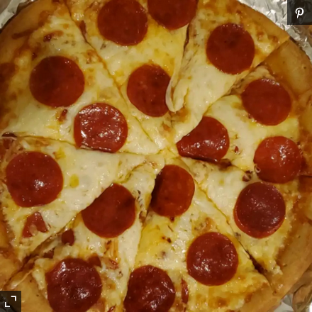

Recipe Book
Pizza

Description
This will help you build a quick, easy and tasty homemade pizza with wonderful crust and delicious sauce!
It has never been easier!
Ingredients (Sauce, Crust, Toppings)
Sauce:
- (12 ounce) can CONTADINA Tomato Sauce
- 1 teaspoon dried oregano, crushed
- 1 teaspoon dried basil, crushed
- Half teaspoon garlic powder
- Half teaspoon onion powder
- Half teaspoon onion powder
- Half teaspoon sugar
- Half teaspoon salt
- Quarter teaspoon black pepper
Crust:
- Three and a quarter cups of all-purpose flour, or more as needed
- 0.25 ounce of FLEISCHMANN'S Pizza Crust Yeast or RapidRise Yeast
- 1 tablespoon sugar
- 1 and a half teaspoons salt
- One third cup of oil
Toppings:
- 6 ounce package HORMEL Pepperoni
- 1 cup shredded mozzarella cheese, or more to taste
Steps
- For sauce: Combine all sauce ingredients with 1/2 cup water in a medium bowl; set aside for flavors to develop while making crust. Freeze remaining paste.
- For crusts: Combine 2 cups of flour with the dry yeast, sugar and salt. Add the water and oil and mix until well blended (about 1 minute).
Gradually add enough remaining flour slowly, until a soft, sticky dough ball is formed.
- Knead for about 4 minutes on a floureed surface, until dough is smooth and elastic. Add more flour, if needed. (If using RapidRise
Yeast, let dough rest, covered, for 10 minutes.)
- Divide dough in half. Pat each half (with floured hands) into a 12-inch greased pizza pan OR roll dough to fit pans.
- For pizzas: Preheat oven to 425 degrees F. Top crusts with sauce, pepperoni and cheese.
- Bake for 18 to 20 minutes until crusts are browned and cheese is bubbly. For best results, roate pizza pans between top and bottom oven racks halfway through baking